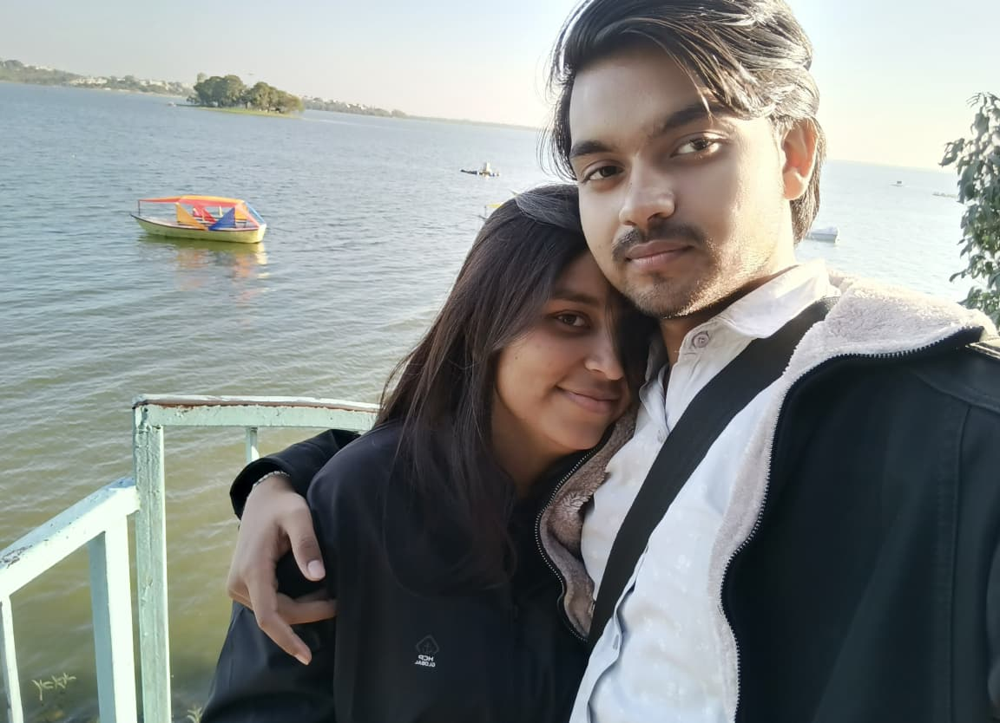
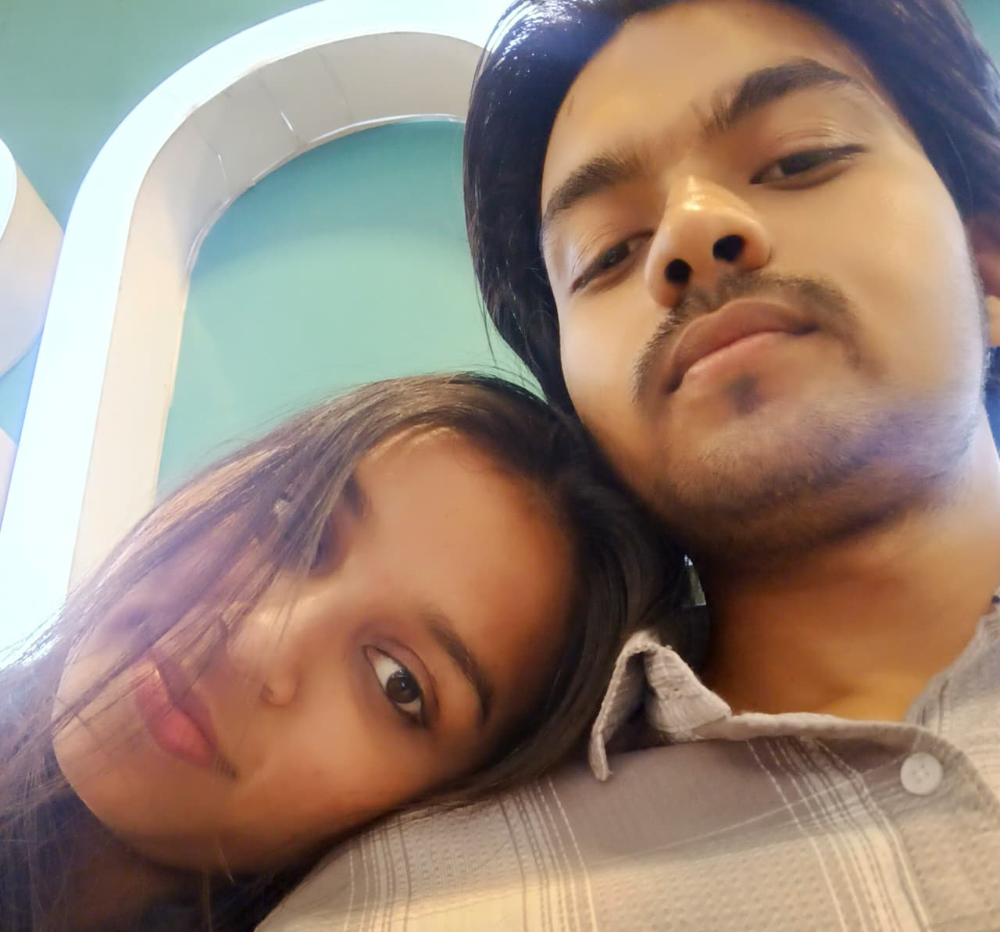
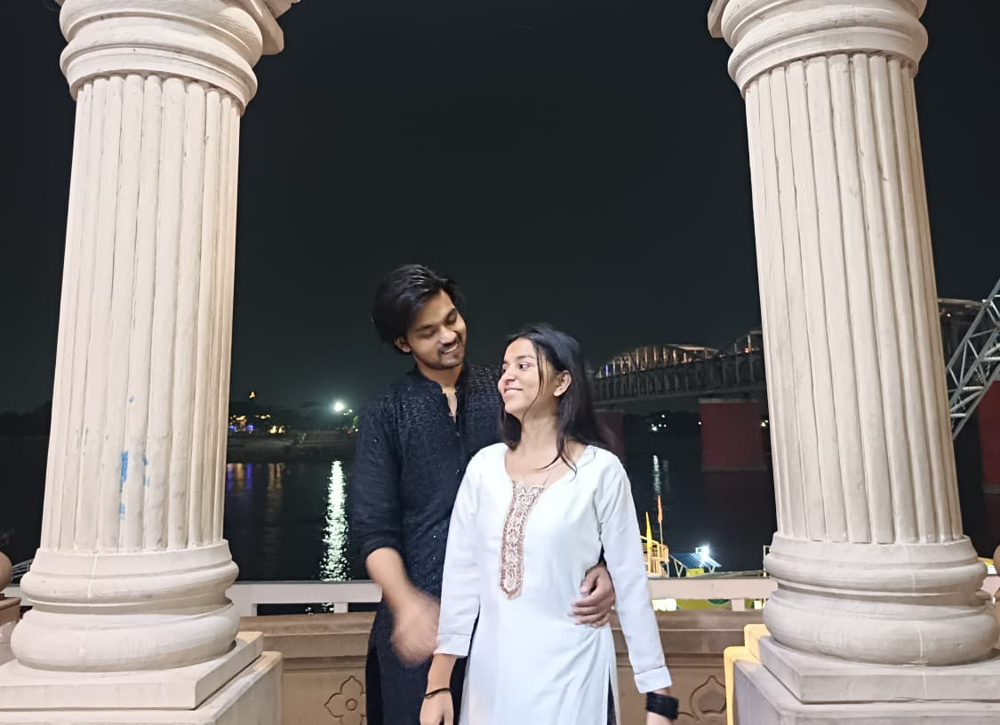

"One Year. Three Journeys. Countless Memories."
365 days of us, and I'd choose you all over again.
One year ago, our story began. Since then, we've collected countless little moments — conversations, laughter, silly fights, beautiful days, difficult days, and memories that somehow became impossible to forget.
And among all those memories, three journeys became chapters of their own.
Our First Trip
Our Second Trip
Our Third Trip
"I didn't just find someone to love. I found someone who makes life feel more beautiful."
Our first trip together. A new city, new places, new moments — and the realization that traveling with you could make even an ordinary day feel extraordinary.
"The destination was Bhopal, but my favorite part was simply being there with you."

Bhopal — The First Chapter
"The best destinations are the ones that leave you with memories you never want to lose."
By our second journey, things already felt a little more familiar — the conversations came easier, the laughter came quicker, and every little moment felt more like us.
"Maybe the best part of a journey isn't where we go, but who we become along the way."

Jabalpur — The Second Chapter
"One year with you, and somehow, every memory still feels like a favorite."
Banaras gave us another collection of moments to keep — another place, another journey, another reminder of how many memories can fit inside a single year.
"Some places stay in your memory because of what you saw. Some stay because of who you were with."
— For me, Banaras will always be one of ours.

Banaras — The Third Chapter
1st Trip
2nd Trip
3rd Trip
"If I could relive this year, I'd still choose every moment with you."
A curated collection of precious memories from across our time together — every laugh, every quiet day, and every moment in between.
"My favorite place has never been a place. It's been beside you."
"It's the random conversations."
"The stupid jokes."
"The uncontrollable laughter."
"The little arguments."
"The comfortable silence."
"The unexpected calls."
"The moments neither of us thought we'd remember."
Those are the moments that made this year ours.
"365 days later, and my heart still chooses you."
Dear Wifey,
One year.
It feels strange saying it out loud.
One whole year of us.
When I think about these 365 days, I don't think about just one particular moment. I think about everything we've collected along the way.
Our first trip to Bhopal.
Our second journey to Jabalpur.
Our days in Banaras.
The conversations between those trips. The laughter. The little fights. The silly moments. The moments when we did absolutely nothing and somehow still had a good time.
You slowly became a part of my everyday life, and somewhere along the way, you became one of the most important parts of it.
Thank you for every memory.
Thank you for every smile.
Thank you for staying.
And thank you for being you.
If this first year has given me three beautiful journeys and countless memories, I can't wait to see where the next chapters take us.
Happy 1st Anniversary, Wifey.
Here's to our first year...
and hopefully, to many more journeys, memories, and ordinary days together.
Always,
Amrit ❤️
Who knows how many more are waiting for us?
Three places.
Countless memories.
One us.
One year down.
A lifetime of memories to go.
And if I had to choose all over again...
Happy 1st Anniversary ❤️
Today. Tomorrow. Always.